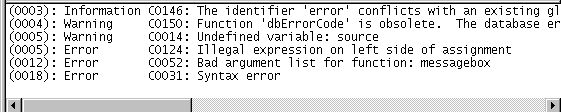

Before you can execute a script, you must compile it.
 To compile a script:
To compile a script:
Click the Compile button, or select Edit>Compile from the menu bar.
PowerBuilder compiles the script and reports any problems it finds, as described in "Handling problems".
 PowerBuilder compiles automatically When you attempt to open a different script in a Script view,
PowerBuilder compiles the current script. When you save the object,
such as the window containing a control you wrote a script for,
PowerBuilder recompiles all scripts in the object to make sure they
are still valid. For example, PowerBuilder checks that all objects
that were referenced when you wrote the script still exist.
PowerBuilder compiles automatically When you attempt to open a different script in a Script view,
PowerBuilder compiles the current script. When you save the object,
such as the window containing a control you wrote a script for,
PowerBuilder recompiles all scripts in the object to make sure they
are still valid. For example, PowerBuilder checks that all objects
that were referenced when you wrote the script still exist.
If problems occur when a script is compiled, PowerBuilder displays messages in a Message window below the script.

There are three kinds of messages:
Errors indicate serious problems that you must fix before a script will compile and before you can close the Script view or open another script in the same view. Errors are shown in the Message window as:
line number: Error error number:message
Warnings indicate problems that you should be aware of but that do not prevent a script from compiling.
There are three kinds of warnings.
Compiler warnings Compiler warnings inform you of syntactic problems, such as undeclared variables. PowerBuilder lets you compile a script that contains compiler warnings, but you must fix the problem in the script before you can save the object that the script is for, such as the window or menu. Compiler warnings are shown in the Message window as:
line number: Warning warning number:message
Obsolete warnings Obsolete warnings inform you when you use any obsolete functions or syntax in your script. Obsolete functions, although they still compile and run, have been replaced by more efficient functions and will be discontinued in a future release of PowerBuilder. You should replace all references to obsolete functions as soon as possible. Obsolete warnings are shown in the Message window as:
line number: Warning warning number:message
Database warnings Database warnings come from the database manager you are connected to. PowerBuilder connects to the database manager when you compile a script containing embedded SQL. Typically, these warnings arise because you are referencing a database you are not connected to. Database warnings are shown in the Message window as:
line number: Database warning number:message
PowerBuilder lets you compile scripts with database warnings and also lets you save the associated object. It does this because it does not know whether the problem will apply during execution, since the execution environment might be different from the compile-time environment.
You should study database warnings carefully to make sure the problems will not occur at runtime.
Information messages are issued when there is a potential problem. For example, an information message is issued when you have used a global variable name as a local variable, because that might result in a conflict later.
Information messages are shown in the Message window as:
line number: Information number:message
To specify which messages display when you compile, select Design>Options to open the Options dialog box, select the Script tab page, and check or clear the Display Compiler Warnings, Display Obsolete Messages, Display Information Messages, and Display Database Warnings check boxes. The default is to display compiler and database warning messages. Error messages always display.
To fix a problem, click the message. The Script view scrolls to display the statement that triggered the message. After you fix all the problems, compile the script again.
 To save a script with errors Comment out the lines containing errors.
To save a script with errors Comment out the lines containing errors.
When PowerBuilder compiles an application that contains embedded SQL, it connects to the database profile last used in order to check for database access errors during the build process. For applications that use multiple databases, this can result in spurious warnings during the build since the embedded SQL can be validated only against that single last-used database and not against the databases actually used by the application. In addition, an unattended build, such as a lengthy overnight rebuild, can stall if the database connection cannot be made.
To avoid these issues, you can select the Disable Database Connection When Compiling and Building check box on the general page of the System Options dialog box.
 Caution Select the check box only when you want to compile without
signing on to the database. Compiling without connecting to a database
prevents the build process from checking for database errors and
may therefore result in runtime errors later.
Caution Select the check box only when you want to compile without
signing on to the database. Compiling without connecting to a database
prevents the build process from checking for database errors and
may therefore result in runtime errors later.